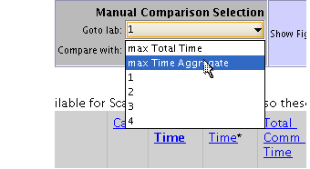

Using the Parallel Profiler in Pmode
This demo provides a brief introduction to using the parallel profiler. It is intended to be a quickstart guide to using the parallel profiler graphical user interface (GUI) and its basic commands. Links are provided to the other parallel profiler demos. Start with this demo unless you are already familiar with mpiprofile.
Contents
Prerequisites:
- Interactive Parallel Mode in the Parallel Computing Toolbox™ (See pmode in the user's guide.)
- A configured cluster if you wish to use more labs than allowed under the local scheduler
- Familiarity with the standard profiler (See documentation for profile.)
You should have at least a few labs when trying the parallel profiler and the following demos. You need at least three to four labs to see the difference between good and bad example parallel code. It is also preferable if all labs are of the same speed and capability.
Related Demos
Introduction
Throughout this demo, which acts as a tutorial on the basics of the parallel profiler, we assume you are familiar with basic features of the standard profile command. If you are new to MATLAB®, familiarize yourself with the examples in the profile help before trying the parallel version (mpiprofile) in this demo.
The MATLAB code related to mpiprofile should not be executed in a regular MATLAB session, but rather at the P>> prompt in the Parallel Command Window. See the Parallel Computing Toolbox Users Guide for details on pmode.
Enabling the Parallel Profiler
Before profiling your parallel code, turn on the parallel profiler's data collection using mpiprofile. Similar to the standard profiler, mpiprofile on can be use to enabled the parallel profiler.
P>> mpiprofile on;
A profiling session usually starts with a mpiprofile on and ends with mpiprofile viewer or mpiprofile off. When we mention a profiling session we refer to the data collected between the start and end of the parallel profiler.
The current status of the parallel profiler can be confirmed by executing:
P>> mpiprofile status;
You can then execute any function as you do with the standard profile command. For instance, you can view the raw profiling information using mpiprofile info.
P>> A = rand(1024, codistributor()); P>> B = A*A; P>> mpiprofile info;
Starting the Graphical Viewer
Once you have completed running your code with the profiler, you can view the results using the graphical interface by typing :
P>> mpiprofile viewer; % This also turns off the profiler.
1 Sending pmode lab2client to the MATLAB client for asynchronous evaluation.
Each of the MATLAB workers running in your cluster collects the profiling data and automatically transfers it to the client(when in pmode). If you want to use all the features of the graphical browser, the profiled MATLAB files need to be available on the client.
Once the viewer starts three types of pages or views are available.
Function Summary Report
The parallel profile viewer, opens with the Function Summary Report first, in the same way as the standard profiler. In this view you can see profile information from any single lab or from multiple labs simultaneously. It initially shows all functions executed on lab 1. You can then choose via the listbox options to see profiling information from any lab.
In this view you can see Aggregate information using the Manual Comparison Selection listboxes. When you select an Aggregate in this view, the profiler accumulates and displays the specified data about all of the executed functions. For example,
- max Time Aggregate lists every function called in the program, and for each function, the data from the lab that spent the most time executing it.
- min Time >0 Aggregate lists every function called in the program, and for each function, the statistics from the lab that spent the least time executing it.

Here are a few things to keep in mind in this view:
- To re-sort the table by a different field simply click the related column title (e.g. Total Comm Time).
- To select a function and go to the Function Detail Report, click any function name that appears in the Function Name column.
- To compare profiling information from different labs, use the Comparison listboxes and buttons (found in the top of each page). Comparison information always displays in a maroon color font. The other demos (see the links at the top of this demo) provide examples of how to use comparisons to pinpoint problems.
- To find which lab the main profiling data (black or blue text) comes from, look at the orange highlighted text at the top of the displayed page or in the top toolbar.
Function Detail Report
The Function Detail Report displays information on the individual lines executed inside the current function for each lab. This includes a Busy Lines table which can be used to compare the top five lines of code on different labs. This report is only fully functional if the profiled MATLAB files are available on the client MATLAB path.
The Function Detail Report is different from the Function Summary Report in several ways:
- The report is generated for one function at a time. The function name is displayed at the top of the page, in green or orange. Green highlighting indicates that the function spent very little (or no) time in communication. Orange highlighting indicates more than 20% of the time was spent in communication or waiting for communication.
- Every listbox option takes into account the last function you clicked. The current function can be changed, if need be, by clicking the Home button in the top toolbar, which also takes you back to the Function Summary Report.
- Profile information Aggregates from multiple labs are calculated only on a per function basis. Therefore in the Function Detail Report, selecting max Time Aggregate displays information from the one lab that took longest executing the current function.
- Comparisons of profiling information are only available in the top five lines shown in the Busy Lines table (the first table from the top unless there is a parents table).
Plot View Report
The Plot View is shown whenever you click a plot option in the Show Figures listbox. The plots show communication and timing information from all the labs for the given function. There are two types of plots (Histograms and PerLab Images). The Plot Time Histograms and Plot All PerLab Communication options show three figures using the corresponding communication fields returned by the mpiprofile info command.
- Plot Time Histograms shows histograms for Total Time, Total Communication Time, and Communication Waiting Time.
- Plot All PerLab Communication shows 2D color coded image plots for Data Received, Receive Communication Time, and Communication Waiting Time.
- The Plot CommTimePerLab option in the Show Figures listbox shows only the Receive Communication Time chart and therefore is faster to generate.
Plotting Per Function or Per Session
There are two modes for the plots:
- Overall session plots: If you are in the Function Summary Report and you have not selected any function the plots are generated for all code executed (with the profiler on).
- Per function plots : If you are in the Function Detail Report after having selected a function, clicking any of the available plots (in the listbox shown below) will take you to the function specific Plot View.
You can always tell which plot mode you are using by looking at the titles of each figure. The titles show the name of the current function (or all functions when showing data for the entire session). The titles also include the name of the profiling field being displayed (e.g., Communication Time, Total Time). If you want to see the data for the entire profiling session after having selected a specific function, click Home to go back to the Function Summary Report then select your desired plot (using the listbox shown below).

For more information see the Parallel Computing Toolbox User's Guide. For a hands-on learning approach try the links to the demos listed under "Related Demos" .